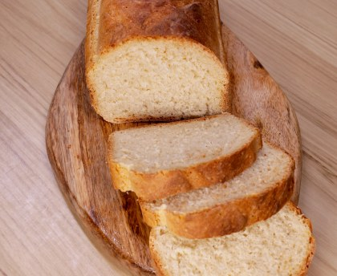

Temps de cuisson : 1h10
Difficulté : Facile
Mélangez la farine, l'huile d'olive, le sachet de levure, le sel et ajoutez l'eau. Malaxez jusqu'à l'obstention d'une pâte homogène. Le geste est important: faites comme si vous étiez en train de plier un mouchoir avec la pâte.
Attention la pâte ne doit pas coller à la paroi! Rajoutez de la farine si elle colle, ou de l'eau si elle est trop sèche.
Prenez un moule à cake et tapissez de papier cuisson, mettez le pain, faites les croisillons avec un couteau pointu.
Prenez un torchon propre, mouillez-le et mettez-le sur le pain.
Attendez une heure que la pâte soit levée. Pendant ce temps-là, préchauffez le four à thermostat 7 ou à 220°C pendant 20 mn environ.
Enfournez pendant 40 mn.